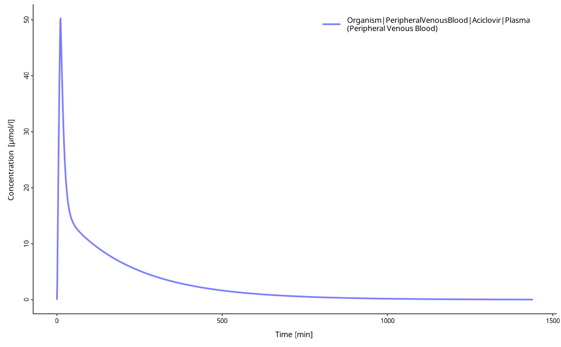

The ospsuite R-package is part of the Open Systems Pharmacology Software (OSPS), an open-source suite of modeling and simulation tools for pharmaceutical and other life-sciences applications. This package provides the functionality of loading, manipulating, and simulating the simulations created in the software tools PK-Sim and MoBi.
This guide demonstrates how to load, run, and visualize PBPK simulations using practical examples.
Overview
This tutorial covers:
- Loading and running PBPK simulations
- Exploring and modifying model parameters
- Visualizing simulation results
- Understanding the basic ospsuite workflow
All examples in this tutorial and the rest of the documentation use the Aciclovir example model (unless stated otherwise), which is included in the package and can be accessed with:
system.file("extdata", "Aciclovir.pkml", package = "ospsuite")Quick Start: Basic Simulation
This example demonstrates the essential ospsuite workflow. Detailed explanations follow in subsequent sections.
# Load the ospsuite package
library(ospsuite)
# Load the built-in example simulation
simFilePath <- system.file("extdata", "Aciclovir.pkml", package = "ospsuite")
sim <- loadSimulation(simFilePath)
# Run the simulation
results <- runSimulations(sim)
# Create a quick visualization
myDataCombined <- DataCombined$new()
myDataCombined$addSimulationResults(results[[1]])
plotIndividualTimeProfile(dataCombined = myDataCombined)
This example loads, runs, and visualizes a PBPK simulation. The plot shows the concentration-time profile for Aciclovir in plasma after IV administration.
Step-by-Step Tutorial
The following sections detail each workflow step and demonstrate ospsuite capabilities.
Loading Simulations
Simulations require a .pkml format file (exported from PK-Sim or MoBi):
# Using the included example
simFilePath <- system.file("extdata", "Aciclovir.pkml", package = "ospsuite")
sim <- loadSimulation(simFilePath)
# For custom files, use:
# sim <- loadSimulation("path/to/simulation.pkml")
# Explore the simulation
print(sim)
#> <Simulation>
#> • Name: Vergin 1995 IV
#> • Source file:
#> /home/runner/.cache/R/renv/library/OSPSuite-R-d4dfdcc6/linux-ubuntu-noble/R-4.5/x86_64-pc-linux-gnu/ospsuite/extdata/Aciclovir.pkmlExploring Model Structure
After loading, explore the simulation structure and parameters:
# Get the simulation tree structure
simTree <- getSimulationTree(sim)
# Explore parameter paths
simTree$Organism$Weight$path
#> [1] "Organism|Weight"
# Find parameters using wildcards
getAllParametersMatching("**|Dose*", sim)
#> [[1]]
#> <Parameter>
#> • Quantity Type: Parameter
#> • Path: Applications|IV 250mg 10min|Application_1|ProtocolSchemaItem|Dose
#> • Value: 2.50e-04 [kg]
#>
#> ── Formula ──
#>
#> • isConstant: TRUE
#>
#> [[2]]
#> <Parameter>
#> • Quantity Type: Parameter
#> • Path: Applications|IV 250mg
#> 10min|Application_1|ProtocolSchemaItem|DosePerBodySurfaceArea
#> • Value: 0.00e+00 [kg/dm²]
#>
#> ── Formula ──
#>
#> • isConstant: TRUE
#>
#> [[3]]
#> <Parameter>
#> • Quantity Type: Parameter
#> • Path: Applications|IV 250mg
#> 10min|Application_1|ProtocolSchemaItem|DosePerBodyWeight
#> • Value: 0.00e+00 [kg/kg]
#>
#> ── Formula ──
#>
#> • isConstant: TRUE
# Or search for specific terms
grep("Dose", getAllParameterPathsIn(container = sim), value = TRUE)
#> [1] "Applications|IV 250mg 10min|Application_1|ProtocolSchemaItem|Dose"
#> [2] "Applications|IV 250mg 10min|Application_1|ProtocolSchemaItem|DosePerBodySurfaceArea"
#> [3] "Applications|IV 250mg 10min|Application_1|ProtocolSchemaItem|DosePerBodyWeight"Note: Parameter paths in ospsuite match those displayed in PK-Sim or MoBi. Starting with MoBi 12.0, parameter paths can be copied by right-clicking the parameter in the simulation tree and selecting “Copy Path”.
Modifying Parameters
Retrieve and modify parameter values:
# Get a specific parameter
dose <- getParameter(
path = "Applications|IV 250mg 10min|Application_1|ProtocolSchemaItem|Dose",
sim
)
print(dose)
#> <Parameter>
#> • Quantity Type: Parameter
#> • Path: Applications|IV 250mg 10min|Application_1|ProtocolSchemaItem|Dose
#> • Value: 2.50e-04 [kg]
#>
#> ── Formula ──
#>
#> • isConstant: TRUE
# Change the dose value
setParameterValues(dose, 0.004) # New dose: 4 mg/kg
print(dose)
#> <Parameter>
#> • Quantity Type: Parameter
#> • Path: Applications|IV 250mg 10min|Application_1|ProtocolSchemaItem|Dose
#> • Value: 4.00e-03 [kg]
#>
#> ── Formula ──
#>
#> • isConstant: TRUE
# Scale a parameter by a factor
scaleParameterValues(dose, factor = 2) # Double the dose
print(dose)
#> <Parameter>
#> • Quantity Type: Parameter
#> • Path: Applications|IV 250mg 10min|Application_1|ProtocolSchemaItem|Dose
#> • Value: 8.00e-03 [kg]
#>
#> ── Formula ──
#>
#> • isConstant: TRUE
# Reset to original value
dose$reset()
print(dose)
#> <Parameter>
#> • Quantity Type: Parameter
#> • Path: Applications|IV 250mg 10min|Application_1|ProtocolSchemaItem|Dose
#> • Value: 2.50e-04 [kg]
#>
#> ── Formula ──
#>
#> • isConstant: TRUECustomizing Simulation Settings
Adjust simulation outputs and solver settings:
# Originally, the simulation outputs plasma concentrations
sim$outputSelections
#> <OutputSelections>
#> • Organism|PeripheralVenousBlood|Aciclovir|Plasma (Peripheral Venous Blood):
#> Drug, Observer
# Add new outputs to track
addOutputs(c("Organism|Lumen|Stomach|Aciclovir"), simulation = sim)
# Now, the simulation will compute two outputs
sim$outputSelections
#> <OutputSelections>
#> • Organism|PeripheralVenousBlood|Aciclovir|Plasma (Peripheral Venous Blood):
#> Drug, Observer
#> • Organism|Lumen|Stomach|Aciclovir: Drug
# Adjust solver precision if needed
sim$solver$absTol <- 1e-12
sim$solver$relTol <- 1e-8
# Add custom output intervals for higher resolution
addOutputInterval(
simulation = sim,
startTime = 1440, # 1 day
endTime = 3000, # ~2 days
resolution = 10, # Every 10 minutes
intervalName = "highRes"
)
# Check current output schema
print(sim$outputSchema)
#> <OutputSchema>
#>
#> ── Output intervals ──
#>
#> <Interval>
#> • Name: Simulation interval high resolution
#> • Start time: 0.00e+00 [min]
#> • End time: 15.00 [min]
#> • Resolution: 1.00 [pts/min]
#> <Interval>
#> • Name: Simulation Interval 1
#> • Start time: 15.00 [min]
#> • End time: 1440.00 [min]
#> • Resolution: 0.33 [pts/min]
#> <Interval>
#> • Name: Simulation Interval 2
#> • Start time: 120.00 [min]
#> • End time: 1440.00 [min]
#> • Resolution: 0.07 [pts/min]
#> <Interval>
#> • Name: highRes
#> • Start time: 1440.00 [min]
#> • End time: 3000.00 [min]
#> • Resolution: 10.00 [pts/min]Running Simulations
After setting parameters, run the simulation:
# Run the simulation
results <- runSimulations(sim)
# Examine the results structure
print(results[[1]])
#> <SimulationResults>
#> • Number of individuals: 1
#> For paths:
#> • Organism|Lumen|Stomach|Aciclovir
#> • Organism|PeripheralVenousBlood|Aciclovir|Plasma (Peripheral Venous Blood)
# Extract specific concentration-time data
plasmaConc <- results[[1]]$getValuesByPath(
"Organism|PeripheralVenousBlood|Aciclovir|Plasma (Peripheral Venous Blood)",
individualIds = 0
)
head(plasmaConc)
#> [1] 0.000000 3.254671 9.100439 15.016583 20.726168 26.201170Visualizing Results
ospsuite provides multiple visualization options:
Option 1: Built-in Plotting Functions
# Create a DataCombined object for plotting
myDataCombined <- DataCombined$new()
myDataCombined$addSimulationResults(
results[[1]],
quantitiesOrPaths = "Organism|PeripheralVenousBlood|Aciclovir|Plasma (Peripheral Venous Blood)"
)
# Convert to data frame if needed
df_results <- myDataCombined$toDataFrame()
head(df_results)
#> # A tibble: 6 × 12
#> IndividualId xValues name yValues xDimension xUnit yDimension yUnit molWeight
#> <int> <dbl> <chr> <dbl> <chr> <chr> <chr> <chr> <dbl>
#> 1 0 0 Orga… 0 Time min Concentra… µmol… 225.
#> 2 0 1 Orga… 3.25 Time min Concentra… µmol… 225.
#> 3 0 2 Orga… 9.10 Time min Concentra… µmol… 225.
#> 4 0 3 Orga… 15.0 Time min Concentra… µmol… 225.
#> 5 0 4 Orga… 20.7 Time min Concentra… µmol… 225.
#> 6 0 5 Orga… 26.2 Time min Concentra… µmol… 225.
#> # ℹ 3 more variables: dataType <chr>, yErrorValues <dbl>, group <chr>
# Create publication-ready plots
plotIndividualTimeProfile(dataCombined = myDataCombined)
Option 2: Custom Plotting with ggplot2
library(ggplot2)
# Transform simulation results to a dataframe
results_df <- simulationResultsToDataFrame(
results[[1]],
quantitiesOrPaths = "Organism|PeripheralVenousBlood|Aciclovir|Plasma (Peripheral Venous Blood)"
)
results_df$Time <- results_df$Time / (60 * 24) # Convert to days
ggplot(results_df, aes(x = Time, y = simulationValues)) +
geom_line(color = "blue", size = 1) +
labs(
title = "Aciclovir Plasma Concentration over Time",
x = "Time (days)",
y = "Plasma Concentration (µmol/L)"
) +
theme_minimal() +
theme(plot.title = element_text(hjust = 0.5))Complete Workflow Example
This complete example demonstrates the typical ospsuite workflow:
# 1. Load simulation
simFilePath <- system.file("extdata", "Aciclovir.pkml", package = "ospsuite")
sim <- loadSimulation(simFilePath)
# 2. Modify parameters (e.g., change dose)
dose <- getParameter(
path = "Applications|IV 250mg 10min|Application_1|ProtocolSchemaItem|Dose",
sim
)
setParameterValues(dose, 0.006) # 6 mg/kg dose
# 3. Run simulation
results <- runSimulations(sim)
# 4. Visualize results
myDataCombined <- DataCombined$new()
myDataCombined$addSimulationResults(results[[1]])
plotIndividualTimeProfile(dataCombined = myDataCombined)Understanding ospsuite Objects
This section explains the key concepts and object structure in ospsuite.
Object-Oriented Approach
The ospsuite R-package utilizes object-oriented (OO) programming based on the R6 system. The package offers a functional programming workflow familiar to R users, but understanding basic OO concepts improves effectiveness.
Most functions return an instance (or object) of a
class. These objects have properties and methods accessible
with the $ sign:
# Creating an object
myData <- DataCombined$new()
# Accessing a property
simulationName <- myData$name
# Calling a method
myData$addSimulationResults(results[[1]])Call print(object) to display detailed information about
any object.
Key Classes
Understanding these main classes improves workflow effectiveness:
Simulation Objects:
-
Simulation: Your loaded PBPK model from the .pkml file -
SimulationResults: Output from running simulations -
SimulationRunOptions: Controls for how simulations run (cores, error checking, progress bars)
Model Structure:
-
Entity: Any part of the model (parameters, molecules, containers) -
Container: Model compartments that contain other entities (organs, compartments) -
Quantity: Entities with values (Parameters and Molecules) -
Parameter: Model parameters you can modify -
Molecule: Drug molecules and their concentrations
Results and Analysis:
-
DataCombined: Container for combining simulation results and observed data -
SimulationPKAnalyses: PK parameter calculations (AUC, Cmax, etc.) -
Population: Virtual population data for population simulations
Configuration:
-
OutputSchema: Defines when simulation results are saved -
OutputSelections: Which quantities to include in results -
SolverSettings: Numerical solver configuration
General Workflow Summary
The typical ospsuite workflow follows these steps:
- Load simulation from .pkml file
- Explore entities (parameters, molecules, containers)
- Modify values (parameter values, initial concentrations)
- Configure outputs (what to track, when to save results)
- Run simulation
- Analyze results (extract data, calculate PK parameters)
- Visualize (built-in plots or custom graphics)
Next Steps
After mastering the basics, explore these advanced topics:
Essential Next Steps:
- Loading a simulation and accessing entities - Deep dive into model exploration
- Changing parameter and molecule start values - Advanced parameter manipulation
- Table parameters - Working with parameter tables and bulk operations
- Running a simulation - Simulation options and batch processing
Population Studies:
- Creating individuals - Virtual patient creation
- Population simulations - Large-scale population PK/PD
Analysis and Optimization:
- PK Analysis - Calculate pharmacokinetic parameters
- Sensitivity analysis - Parameter importance analysis
Data Integration:
- Working with observed data - Import experimental data
- DataCombined workflows - Combine simulations with observations
- Visualizations with DataCombined - Advanced plotting with DataCombined objects
Advanced Topics:
- Efficient calculations - Performance optimization
- Dimensions and Units - Unit conversion and validation
General Information
In order to load a simulation in R, it must be present in the *.pkml file format. Every simulation in PK-Sim or MoBi can be exported to the *.pkml format. Unless otherwise stated, the examples shown in the vignettes are based on the Aciclovir example model, which can be found in the PK-Sim examples folder of your OSPS installation.
Important Notes:
- Parameter paths in ospsuite exactly match those in PK-Sim/MoBi
- You cannot add new model structure (like new administrations) - only modify existing parameters
- For complex dosing regimens, create them in PK-Sim/MoBi first, then modify in R
- Simulation files (.pkml) contain the complete model structure and cannot be modified structurally in R
For detailed exploration of model structure and parameter access, see Loading a simulation and accessing entities.